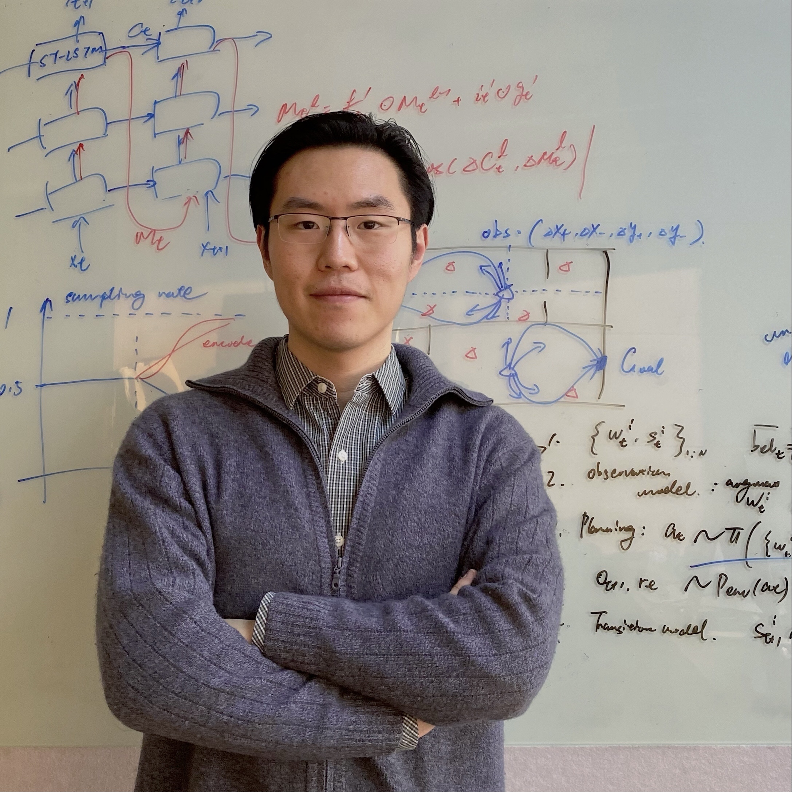

Yunbo WANG
Associate Professor
Artificial Intelligence Institute, School of Computer Science
Shanghai Jiao Tong University
Email: yunbow@sjtu.edu.cn
Mail: 5-514, Software Building, 800 Dongchuan RD, Shanghai 200240
Google Scholar
|
|

|
Our group's research lies in the intersection of machine learning and computer vision, aiming to advance computational understanding of real-world dynamics. We investigate this through intuitive physical inference and model-based reinforcement learning, aiming to equip agents with purposeful imagination capabilities that generalize and scale across complex, open-world scenarios.
I received my Ph.D. and M.E. degrees from Tsinghua University, advised by Philip S. Yu,
Mingsheng Long,
and Yangdong Deng,
and my B.S. degree from Xi'an Jiaotong University.
I also spent time in Josh Tenenbaum's lab at MIT working with Jiajun Wu in probabilistic planning and model-based reinforcement learning.
For prospective graduate students:
I appreciate your interest in joining our group! We have 1 open position for Ph.D. students and 1 open position for Master students in Class 2026 in School of Computer Science.
We are organizing the NeurIPS 2025 Workshop on Embodied World Models for Decision Making.
Publications
- MetaTrader: Learning to Generalize RL Trading Policies Beyond Offline Data
Haochen Yuan*, Minting Pan*, Yunbo Wang*, Siyu Gao, Xiaokang Yang
AAAI 2026
[PDF]
- MetaGS: A Meta-Learned Gaussian-Phong Model for Out-of-Distribution 3D Scene Relighting
Yumeng He, Yunbo Wang*, Xiaokang Yang
NeurIPS 2025 Spotlight (Top 3.5%)
[PDF]
[Website]
[PyTorch Code]
- Video-Enhanced Offline Reinforcement Learning: A Model-Based Approach
Minting Pan, Yitao Zheng, Jiajian Li, Yunbo Wang*, Xiaokang Yang
ICML 2025
[PDF]
[Website]
[PyTorch Code]
- EvoMesh: Adaptive Physical Simulation with Hierarchical Graph Evolutions
Huayu Deng, Xiangming Zhu, Yunbo Wang*, Xiaokang Yang
ICML 2025
[PDF]
[Website]
[PyTorch Code]
- Continual Visual Reinforcement Learning with A Life-Long World Model
Minting Pan, Wendong Zhang, Geng Chen, Xiangming Zhu, Siyu Gao, Yunbo Wang*, Xiaokang Yang
ECML 2025
[PDF]
[PyTorch Code]
- Dynamic Scene Understanding through Object-Centric Voxelization and Neural Rendering
Yanpeng Zhao, Yiwei Hao, Siyu Gao, Yunbo Wang*, Xiaokang Yang
TPAMI 2025
[PDF]
[Website]
[PyTorch Code]
- Open-World Reinforcement Learning over Long Short-Term Imagination
Jiajian Li*, Qi Wang*, Yunbo Wang*, Xin Jin, Yang Li, Wenjun Zeng, Xiaokang Yang
ICLR 2025 Oral (Top 1.8%)
[PDF]
[Website]
[PyTorch Code]
- Making Offline RL Online: Collaborative World Models for Offline Visual Reinforcement Learning
Qi Wang*, Junming Yang*, Yunbo Wang*, Xin Jin, Wenjun Zeng, Xiaokang Yang
NeurIPS 2024
[PDF]
[Website]
[PyTorch Code]
- Model-Based Reinforcement Learning with Multi-Task Offline Pretraining
Minting Pan*, Yitao Zheng*, Yunbo Wang*, Xiaokang Yang
ECML 2024
[PDF]
[PyTorch Code]
- Latent Intuitive Physics: Learning to Transfer Hidden Physics from A 3D Video
Xiangming Zhu*, Huayu Deng*, Haochen Yuan*, Yunbo Wang*, Xiaokang Yang
ICLR 2024
[PDF]
[Website]
[PyTorch Code]
- DynaVol: Unsupervised Learning for Dynamic Scenes through Object-Centric Voxelization
Yanpeng Zhao*, Siyu Gao*, Yunbo Wang*, Xiaokang Yang
ICLR 2024
[PDF]
[Website]
[PyTorch Code]
- Model-Based Reinforcement Learning with Isolated Imaginations
Minting Pan, Xiangming Zhu, Yitao Zheng, Yunbo Wang*, Xiaokang Yang
TPAMI 2023
[PDF]
[PyTorch Code]
- ModeRNN: Harnessing Spatiotemporal Mode Collapse in Unsupervised Predictive Learning
Zhiyu Yao*, Yunbo Wang*, Haixu Wu, Jianmin Wang, Mingsheng Long*
TPAMI 2023
[PDF]
[PyTorch Code]
- Improving Masked Autoencoders by Learning Where to Mask
Haijian Chen*, Wendong Zhang*, Yunbo Wang*, Xiaokang Yang*
PRCV 2023 (Best Student Paper Award Nomination)
[PDF]
[PyTorch Code]
- Fully Context-Aware Image Inpainting with a Learned Semantic Pyramid
Wendong Zhang, Yunbo Wang*, Bingbing Ni, Xiaokang Yang
Pattern Recognition 2023
[PDF]
[PyTorch Code]
- StockFormer: Learning Hybrid Trading Machines with Predictive Coding
Siyu Gao, Yunbo Wang*, Xiaokang Yang
IJCAI 2023
[PDF]
[PyTorch Code]
- Iso-Dream: Isolating and Leveraging Noncontrollable Visual Dynamics in World Models
Minting Pan*, Xiangming Zhu*, Yunbo Wang*, Xiaokang Yang
NeurIPS 2022 Spotlight
[PDF]
[Website]
[PyTorch Code]
- Out-of-Domain Human Mesh Reconstruction via Dynamic Bilevel Online Adaptation
Shanyan Guan, Jingwei Xu, Michelle Z. He, Yunbo Wang*, Bingbing Ni, Xiaokang Yang
TPAMI 2022
[PDF]
[Website]
[PyTorch Code]
- NeuroFluid: Fluid Dynamics Grounding with Particle-Driven Neural Radiance Fields
Shanyan Guan, Huayu Deng, Yunbo Wang*, Xiaokang Yang
ICML 2022 Spotlight
[PDF]
[Slides]
[Website]
[PyTorch Code]
- Continual Predictive Learning from Videos
Geng Chen*, Wendong Zhang*, Han Lu, Siyu Gao, Yunbo Wang*, Mingsheng Long, Xiaokang Yang
CVPR 2022 Oral
[PDF]
[Website]
[PyTorch Code]
- PredRNN: A Recurrent Neural Network for Spatiotemporal Predictive Learning
Yunbo Wang*, Haixu Wu*, Jianjin Zhang, Zhifeng Gao, Jianmin Wang, Philip S. Yu, Mingsheng Long*
TPAMI 2022 (ESI - Top 1% highly cited)
[PDF]
[PyTorch Code]
- Learning Transferable Features for Point Cloud Detection via 3D Contrastive Co-training
Yihan Zeng*, Chunwei Wang*, Yunbo Wang, Hang Xu, Chaoqiang Ye, Zhen Yang, Chao Ma
NeurIPS 2021
[PDF]
[Supplement]
- VideoDG: Generalizing Temporal Relations in Videos to Novel Domains
Zhiyu Yao*, Yunbo Wang*, Jianmin Wang, Philip S. Yu, Mingsheng Long*
TPAMI 2021
[PDF]
[PyTorch Code]
- Context-Aware Image Inpainting with Learned Semantic Priors
Wendong Zhang, Junwei Zhu, Ying Tai, Yunbo Wang*, Wenqing Chu, Bingbing Ni, Chengjie Wang, Xiaokang Yang
IJCAI 2021
[PDF]
[PyTorch Code]
- Bilevel Online Adaptation for Out-of-Domain Human Mesh Reconstruction
Shanyan Guan*, Jingwei Xu*, Yunbo Wang*, Bingbing Ni, Xiaokang Yang
CVPR 2021
[PDF]
[Website]
[PyTorch Code]
- MetaSets: Meta-Learning on Point Sets for Generalizable Representations
Chao Huang*, Zhangjie Cao*, Yunbo Wang*, Jianmin Wang, Mingsheng Long*
CVPR 2021
[PDF]
[PyTorch Code]
- Deep Predictive Learning: Problems and Methods
PhD Dissertation (in Chinese) [PDF]
Outstanding Doctoral Dissertation Award, China Computer Federation (CCF), 2020
- Unsupervised Transfer Learning for Spatiotemporal Predictive Networks
Zhiyu Yao*, Yunbo Wang*, Mingsheng Long*, Jianmin Wang
ICML 2020
[PDF]
[PyTorch Code]
- DualSMC: Tunneling Differentiable Filtering and Planning under Continuous POMDPs
Yunbo Wang*, Bo Liu*, Jiajun Wu, Yuke Zhu, Simon S. Du, Li Fei-Fei, Joshua B. Tenenbaum
IJCAI 2020
[PDF]
[Website]
[PyTorch Code]
- Probabilistic Video Prediction from Noisy Data with a Posterior Confidence
Yunbo Wang, Jiajun Wu, Mingsheng Long, Joshua B. Tenenbaum
CVPR 2020
[PDF]
[Website]
- Progressive Adversarial Networks for Fine-Grained Domain Adaptation
Sinan Wang, Xinyang Chen, Yunbo Wang, Mingsheng Long*, Jianmin Wang
CVPR 2020
[PDF]
- A Multi-Player Minimax Game for Diversifying Multi-Discriminators of Generative Adversarial Networks
Ying Jin, Yunbo Wang, Mingsheng Long*, Jianmin Wang, Philip S. Yu, Jiaguang Sun
ICME 2020
[PDF]
- Multi-Task Learning of Generalizable Representations for Video Action Recognition
Zhiyu Yao*, Yunbo Wang*, Mingsheng Long*, Jianmin Wang, Philip S. Yu, Jiaguang Sun
ICME 2020
[PDF]
- Memory In Memory: A Predictive Neural Network for Learning Higher-Order Non-Stationarity from Spatiotemporal Dynamics
Yunbo Wang*, Jianjin Zhang*, Hongyu Zhu, Mingsheng Long*, Jianmin Wang, Philip S. Yu
CVPR 2019
[PDF]
[TensorFlow Code]
- Eidetic 3D LSTM: A Model for Video Prediction and Beyond
Yunbo Wang, Lu Jiang, Ming-Hsuan Yang, Li-Jia Li, Mingsheng Long, Li Fei-Fei
ICLR 2019
[PDF]
[Poster]
[TensorFlow Code]
- PredRNN++: Towards A Resolution of the Deep-in-Time Dilemma in Spatiotemporal Predictive Learning
Yunbo Wang, Zhifeng Gao, Mingsheng Long*, Jianmin Wang, Philip S. Yu
ICML 2018
[PDF]
[TensorFlow Code]
- PredCNN: Predictive Learning with Cascade Convolutions
Ziru Xu*, Yunbo Wang*, Mingsheng Long*, Jianmin Wang
IJCAI 2018
[PDF]
- PredRNN: Recurrent Neural Networks for Predictive Learning Using Spatiotemporal LSTMs
Yunbo Wang, Mingsheng Long*, Jianmin Wang, Zhifeng Gao, Philip S. Yu
NeurIPS 2017
[PDF]
[PyTorch Code]
- Spatiotemporal Pyramid Network for Video Action Recognition
Yunbo Wang, Mingsheng Long*, Jianmin Wang, Philip S. Yu
CVPR 2017
[PDF]
- A Feasibility Study of Ray Tracing on Mobile GPUs
Yunbo Wang, Chunfeng Liu, Yangdong Deng*
SIGGRAPH Asia 2014
[PDF]
Preprints
- NeoWorld: Neural Simulation of Explorable Virtual Worlds via Progressive 3D Unfolding
Yanpeng Zhao, Shanyan Guan, Yunbo Wang*, Yanhao Ge, Wei Li, Xiaokang Yang
[PDF]
[Website]
- DimOL: Dimensional Awareness as A New 'Dimension' in Operator Learning
Yichen Song, Yunbo Wang*, Xiaokang Yang
[PDF]
[PyTorch Code]
- ReAugment: Model Zoo-Guided RL for Few-Shot Time Series Augmentation and Forecasting
Haochen Yuan, Yutong Wang, Yihong Chen, Yunbo Wang*, Xiaokang Yang
[PDF]
Teaching
- JCCX0021: Fundamentals of Artificial Intelligence (Reinforcement Learning), 2022-2025
- CS0502: Introduction to Computer Science, 2022-2025
Research Group
- Graduate students:
Minting Pan, Huayu Deng (Co-supervised), Xiangming Zhu,
Qi Wang (Co-supervised), Haochen Yuan, Yanpeng Zhao, Yumeng He, Yitao Zheng,
Yichen Song (Co-supervised), Yuetian Wang (Co-supervised)
- Alumni:
Jingwei Xu (2021),
Wendong Zhang (2023),
Geng Chen (2023),
Shanyan Guan (2024),
Siyu Gao (2024), Haijian Chen (2024)
Research Grants
- PI, Visual Intuitive Learning of Fluid Dynamics, NSFC Original Exploratory Program, 2023-2025
- PI, Predictive Learning from Spatiotemporal Data, NSFC Young Scientists Fund, 2022-2024
Academic Services
Area Chair
NeurIPS, ICML, AAAI
|
|